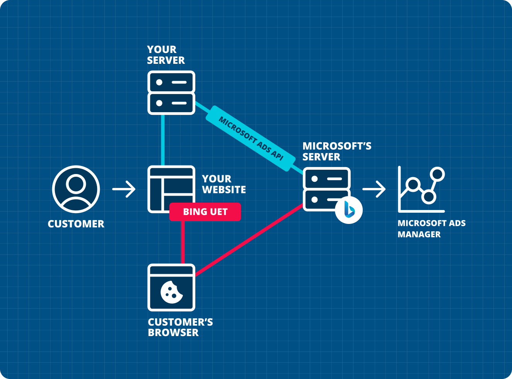
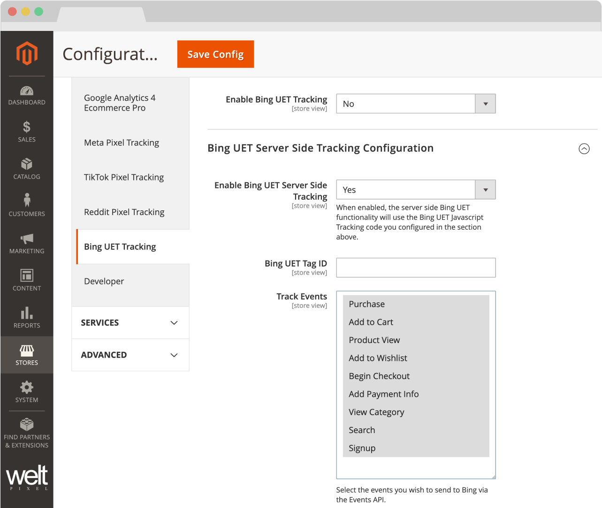
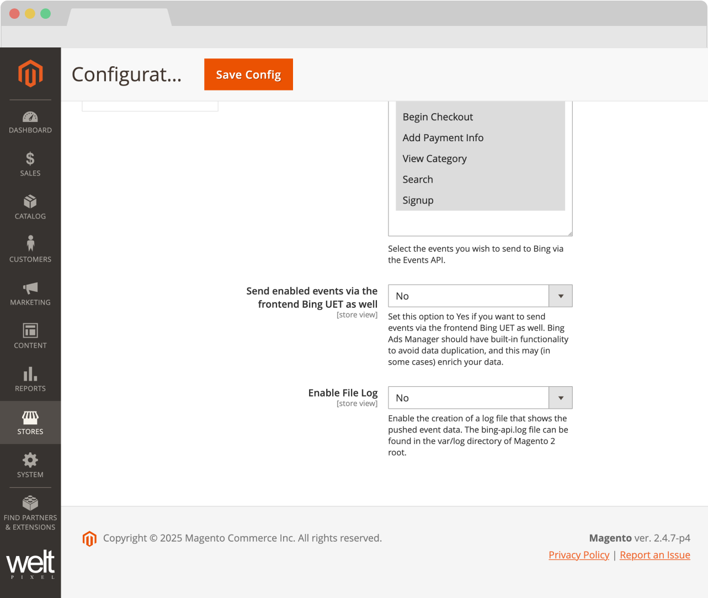

Microsoft Ads (Bing UET) API Addon for Google Analytics 4 PRO
Requires the Google Analytics 4 PRO extension.
Redefining Advertising: Microsoft Ads (Bing UET).
Microsoft Ads (Bing UET) is a powerful advertising solution that creates a secure and reliable connection between your marketing data and Microsoft's advertising platform. It works seamlessly across web applications, mobile apps, and offline channels to provide comprehensive tracking and analytics.
By implementing Microsoft Ads (Bing UET), marketers can significantly enhance their advertising performance through a robust server-side implementation that centralizes data collection and ensures consistent tracking across all customer touchpoints.
What are the advantages of using Microsoft Ads (Bing UET)?
Enhanced tracking accuracy
Microsoft Ads (Bing UET) overcomes browser limitations and tracking inconsistencies by implementing server-side tracking, ensuring that a more complete and accurate dataset is collected.
Privacy-focused data sharing
With Microsoft Ads (Bing UET), you maintain control over your data, sharing only what's necessary to achieve your marketing objectives while respecting user privacy preferences.
Adaptable to evolving digital landscape
The combination of server-side implementation with frontend tracking creates a resilient marketing infrastructure that can adapt to industry changes in privacy regulations and browser policies.
Unified data collection
Streamline your marketing operations by consolidating event data from multiple channels into a single API, improving efficiency and ensuring consistent measurement across your entire business.
How does it work?
Customer performs an action on your store
Server-side tracking captures the event data
Data is sent to Microsoft Ads via the Events API
Conversion data appears in your Microsoft Ads account
The diagram below illustrates how the Microsoft Ads (Bing UET) and Microsoft Ads (Bing UET) Events API work together:

Features of the Microsoft Ads (Bing UET) API Addon
Event Tracking
- Server-side Place an Order (Purchase) Event Tracking
- Server-side Add Payment Info Event Tracking
- Server-side Initiate Checkout Event Tracking
- Server-side Add To Cart Event Tracking
Additional Events
- Server-side Add To Wishlist Event Tracking
- Server-side Search Event Tracking
- Server-side View Content Event Tracking
Powerful Integration
- Ability to track selected events in conjunction with the frontend Microsoft Ads (Bing UET)
- Directly and fully integrated into the Google Analytics 4 PRO extension
- Ability to send data to multiple Microsoft Ads properties
Developer Tools
- Log functionality for in-depth debugging of events sent to the Bing API
- Easy setup, all that's required is the Microsoft Ads (Bing UET) Pixel ID and the Microsoft Ads (Bing UET) Events API Key
- Option to track only specific customer groups
System Compatibility
- Compatible with Magento 2.3.x - 2.4.8
- Works with all Magento editions
- Supports multiple store views
Requirements for using the Microsoft Ads (Bing UET) API Addon
To use the Microsoft Ads (Bing UET) API Addon, you'll need the following:
- A Microsoft Ads (Bing UET) Pixel client-side integration, in order to gain access to your Microsoft Ads (Bing UET) Pixel Tracking Base Code. Our Google Analytics 4 PRO extension comes with the possibility of setting up the client-side Microsoft Ads (Bing UET) Pixel out of the box, which can be done within minutes.
- The Google Analytics 4 PRO extension enabled and configured.
HOW TO INSTALL
This extension is installed via Composer, which is the official and only supported installation method.
Step 1: Prerequisites
- Ensure your Magento version is compatible (2.3.0 - 2.4.8 and all Security Patches)
- Install on a testing/development environment first
- Set Magento to developer mode before installation
- Make sure you have Composer installed on your server
php bin/magento deploy:mode:set developer
Step 2: Access Composer Configuration
Head into the Downloadable Products section of your weltpixel.com account. This is where you'll be able to see your Composer Configuration Commands.
You'll need to have Composer installation enabled for your account. If you don't see the Composer Configuration Commands, please contact our support team.
Step 3: Configure Repository
Run the generated commands from your account. Example commands:
composer config repositories.weltpixel composer https://weltpixel.repo.packagist.com/your-id/
composer config --global --auth http-basic.weltpixel.repo.packagist.com token your-token
These commands will provide you access to the WeltPixel repository. Replace 'your-id' and 'your-token' with the actual values from your account.
Step 4: Install via Composer
Run the following command in your Magento root directory:
composer require weltpixel/module-ga4-bingss
Step 5: Enable and Setup
Run the following commands:
php bin/magento setup:upgrade php bin/magento setup:di:compile php bin/magento setup:static-content:deploy -f
Step 6: Cache Management
Flush any caches:
php bin/magento cache:flush
Step 7: Production Mode
If your store was in production mode, switch it back:
php bin/magento deploy:mode:set production
Wooohooo! The extension is now installed on your Magento store! Congrats!
How to Upgrade the Extension
- Step 1: Run: composer update (for the package)
- Step 2: Run setup commands: php bin/magento setup:upgrade, php bin/magento setup:di:compile, php bin/magento setup:static-content:deploy -f
- Step 3: Flush cache: php bin/magento cache:flush
How to Configure the Microsoft Ads (Bing UET) API Addon
Basic Configuration
Admin → WeltPixel → Google Analytics 4 Ecommerce PRO → Bing UET Tracking Settings
Enable Microsoft Ads (Bing UET) Server Side Tracking
When enabled, the server-side Microsoft Ads (Bing UET) functionality will use the Microsoft Ads (Bing UET) Javascript Tracking code configured in the client-side configuration section.
Microsoft Ads (Bing UET) Tag ID
This ID can be found in your Microsoft Ads Manager account under UET Tag → View UET tag. You can also find it in your Microsoft Ads (Bing UET) Javascript Tracking code in the section above.
Track Events
Select the events you wish to send to Bing via the Events API: Purchase / Add to Cart / Product View / Add to Wishlist / Begin Checkout / Add Payment Info / View Category / Search / Signup

Advanced Configuration

Send enabled events via the frontend Microsoft Ads (Bing UET) Tag as well
Set this option to Yes if you want to send events via the frontend Microsoft Ads (Bing UET) as well. Microsoft Ads Manager should have built-in functionality to avoid data duplication, and this may (in some cases) enrich your data.
Enable File Log
Enable the creation of a log file that shows the pushed event data. The bing-api.log file can be found in the var/log directory of Magento 2 root.
Track Only Specific Customer Groups
If set to Yes, only selected customer groups will be tracked by Bing UET server-side events.
Send eCommerce Event Data to multiple Bing UET endpoints
If set to Yes, you'll be able to add additional Bing UET property IDs to which you want to send eCommerce event data to. You'll need the Bing UET Tag ID of each additional property you want to add. Note: Adding a new property here will only send the enabled eCommerce events in the Bing UET Server Side Tracking configuration. If you need to also send Page View events, in order to stitch data and ensure attribution, you'll also need to add additional Bing UET Tracking codes in the Bing UET Tag Javascript Code section above.
Change Log
Version History
- New Feature: Added a functionality whereby hashed customer data sent via the purchase event (email, phone, address, etc) is persisted after purchase and sent alongside all other triggered events. This works to increase match quality scores (EMQ for Meta, for example) for returning customers, leading to an overall enhancement in ad performance & optimziation.
- Giving back: As a celebration of over 10 years of activity within the Magento 2 ecosystem, and as a way to give back to the community, a number of WeltPixel extensions (both FREE and paid) have officially gone fully Open Source via public Github repositories. Find the full list on Github.
- New Feature: Introduced composer as the official and singular installation method for all WeltPixel products. Previously, this was only available for the PRO version of the Google Analytics 4 extension, as well as the Marketing Suite Pro.
- Fixed a bug that would sometimes prevent customers from properly creating accounts via the frontend when the addon was enabled.
- New Feature: Augumented the addon's server-side logging functionality with a Magento Admin interface, allowing merchants to explore payloads and event logs without having to access the server.
- New Feature: Added an interactive form that can be submitted via the Magento Admin to provide an efficient method of submitting feedback/feature requests.
- Magento Compatibility: Introduced compatibility with the latest released Magento 2 Security Patches - Magento 2.4.8-p3, Magento 2.4.7-p8, Magento 2.4.6-p13, Magento 2.4.5-p15 & Magento 2.4.4-p16.
- Added adjustments to pricing parameter calculation to Begin Checkout and Add Payment Info events to ensure a higher degree of data accuracy.
- New Feature: Optimized the addon's event logging functionality to increase clarity and improve the process of searching/filtering through logged events. All data logged for a specific event is now included on the same line. Before this release, every logged piece of information would take up a separate line, even if related to the same eCommerce event.
- Magento Compatibility: Introduced compatibility with the latest released Magento 2 Security Patches - Magento 2.4.8-p2, Magento 2.4.7-p7, Magento 2.4.6-p12, Magento 2.4.5-p14 & Magento 2.4.4-p15.
- The addon now features the capability of sending data to multiple Microsoft Ads properties via newly added Magento Admin settings. This allows you to send event data from the same Magento 2 instance to any number of Microsoft Ads properties. This feature is also included in the Google Analytics 4 PRO extension and other API addons.
- Fixed an issue that would, in very specific cases, prevent the addon from sending purchase events via cron. This would happen when, for any reason, the ID of the product on the order that was supposed to be sent no longer existed (deleted product, for example).
- New Feature: Added options to allow for filtering of events based on Customer Groups. The extension now pulls all Customer Groups and allows merchants to select for which of those they'd like event data to be sent.
- Magento Compatibility: Introduced compatibility with the latest Magento 2.4.8-p1, 2.4.7-p6, 2.4.6-p11 & 2.4.5-p13 Security Patches releases. Upgrade ASAP to keep your store secure.
- Made various code optimizations related to Grand Total and Subtotal calculations in order to increase module customizability.
- Magento Compatibility: Introduced compatibility with the new Magento 2.4.8 release, as well as the accompanying 2.4.7-p5, 2.4.6-p10, 2.4.5-p12 and 2.4.4-p13 Security Patches.
- PHP Compatibility: Introduced compatibility with PHP 8.4, which is now officially compatible with the latest Magento 2.4.8 version.
- Fixed an issue that caused the incorrect user IP address to be sent when utilizing CDNs such as Cloudflare. Previously, the extension would always send the IP assigned by the CDN.
- Fixed an issue that sometimes prevented the extension's Order Exclusion by Status functionality from properly working when sending orders via cron.
- Added a default User Agent the extension uses when orders are sent via cron.
- Fixed an incorrect namespace used throughout the extension files.
- Initial Release: This product is an addon and requires a version equal to or higher than 1.14.9 of the Google Analytics 4 PRO extension to be used.
Future updates will include additional features and enhancements to the Microsoft Ads (Bing UET) API integration.